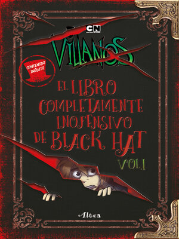
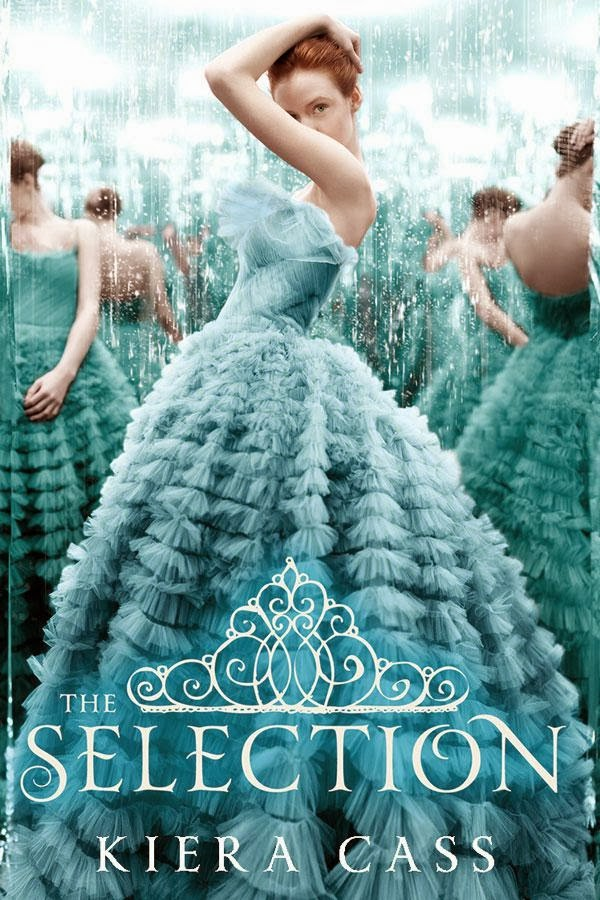
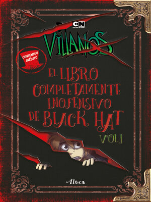
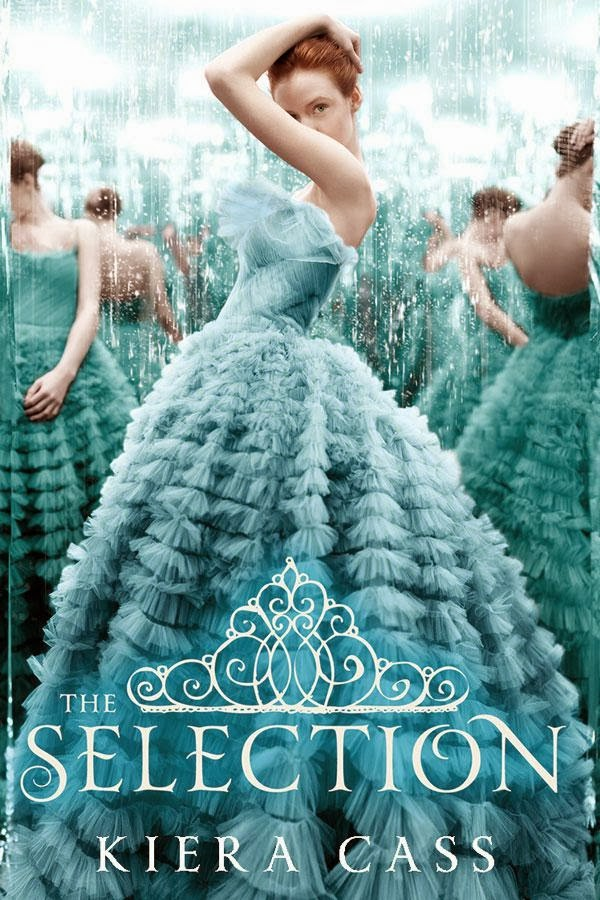

Tus ojos son la patria del relámpago y de la lágrima,
silencio que habla,
tempestades sin viento, mar sin olas,
pájaros presos, doradas fieras adormecidas,
topacios impíos como la verdad,
otoño en un claro del bosque en donde la luz canta en el hombro de un árbol y son pájaros
todas las hojas,
playa que la mañana encuentra constelada de ojos,
cesta de frutos de fuego,
mentira que alimenta,
espejos de este mundo, puertas del más allá,
pulsación tranquila del mar a mediodía,
absoluto que parpadea,páramo.
¿Quieres compartir tus opiniones?¿Hacer amigos lectores? o ¿Convencer a las personas de que lean tu libro favorito?
Cada mes escojemos un libro por medio de votación, una vez termine el mes, nos reunimos via zoom para realizar actividades increibles, conocernos mas y dar nuestras opiniones sobre el libro del mes. Escribe tu correo electrónico para unirte a nuestros clubs de lectura, elije infantil o juvenil y nosotros nos contactaremos contigo para darte mas información sobre las reuniones, ¡Te esperamos!

  
 